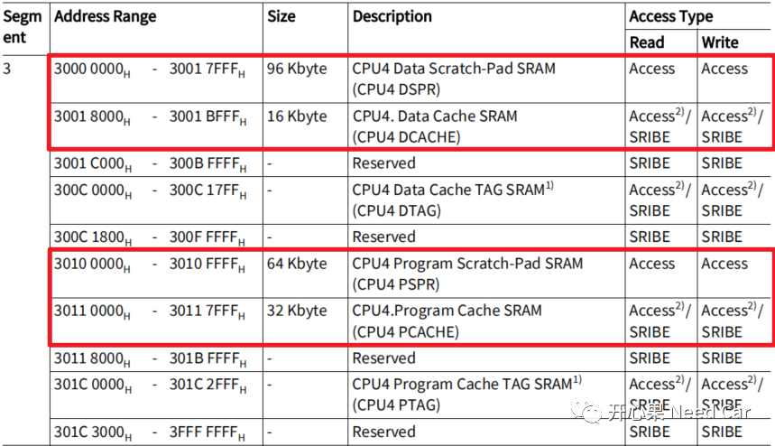
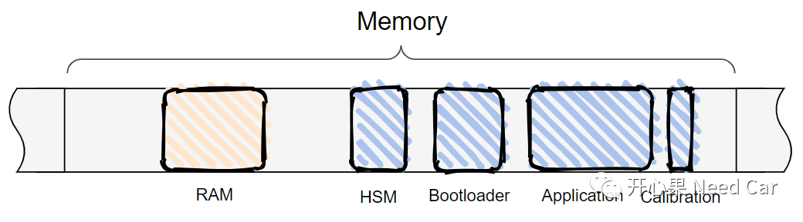
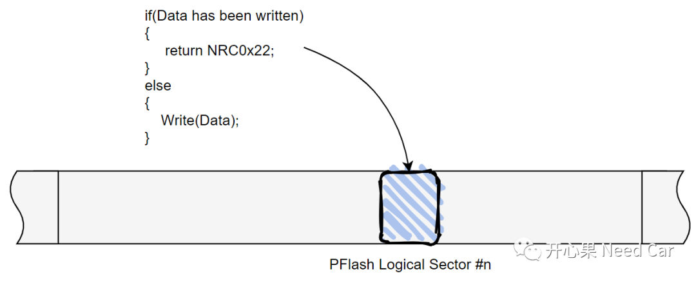

开心果 Need Car · 2023-11-03T07:47:00+08:00 · 微信原文
工程开发中，数据有效存储与读取是一个不可忽视的话题。只有数据有效存储，准确读取，方能确保上层软件模块按照预期执行。但是，内存需求部分，又是甲方输入比较模糊的点，导致乙方经验主义。很多时候，工程开发到后期，各种各样的内存问题，如扎堆生长的"蘑菇"，一个又一个。本文，从内存应用场景，讨论内存议题（一）：数据单次存储。
1、内存简介
工程中，使用的RAM常常是指SRAM（Static Random Access Memory）。根据使用场景，SRAM又分为DSPR（Data Scratch-Pad SRAM），用于存储全局变量等；PSPR（Program Scratch-Pad SRAM），用于存放Code，eg：SBL（Secondary Bootloader）或者Flash Driver。对于Data和Program又分为Cache和NonCache。TC3xx CPU4的SRAM分配示意如下：

当我们对一个单片机的内存特性有所认知以后，即可根据项目情况，设计内存的Layout，示意如下：

2、数据单次存储
在工程场景中，你面对过哪些数据需要单次存储？不绕圈子，这里举几个例子。eg：公钥（Public Key）、安全常量（Security Const）、车主生物信息（eg：指纹等）等。为什么会有这样的需求呢？单看如上的存储信息，大家应该能意识到：单次存储的信息具有不可修改性，甚至还需要保密（不可获取）。所以，对于这些信息的存储位置需要施加限制。那么，问题来了：工程上，你是如何存储的呢？存储到什么样的内存区呢？
对于需要进行单次存储的数据，重复存储会如何提示呢？对于需要单次存储的数据，多数情况，需要在产线存储，eg：通过诊断方式写入。如果使用诊断方式存储，当多次进行写操作时，一般会要求回复诊断负反馈NRC0x22（Conditions Not Correct，条件不满足）。回到问题本身：存储到什么位置合适呢？
如果要把数据存储到PFlash，意味需要独立划分一个PFlash Logical Sector，用于存储这类信息。但是，PFlash具有可擦除属性，如何做到只写一次呢？这需要配合软件逻辑实现，示意如下所示：

如果要把数据存储到DFlash，也需要独立划分一个DFlash Logical Sector，存储这类信息，原理类似PFlash。但是，在一些芯片中，DFlash有另外一种操作模式：设置成OTP（One Time Program）。当DFlash特定区域设置成OTP时，意味着：硬件限制指定DFlash内存的操作次数。相比于软件判断会更安全，因为这样就从物理上限制了数据被改写的可能。
往期精彩回顾
CAN通信：Busoff以后，为什么要等待128次连续11个隐性位？